Drexen
Dirección de marca.
Tres propuestas de logotipo.
Drexen no carga significado ni límites heredados. Es un nombre en blanco, y eso es una ventaja: lo que le dé sentido va a ser el trabajo, los productos y el trato al cliente. Lo que sigue son tres formas distintas de empezar a llenarlo.
Paleta Premium
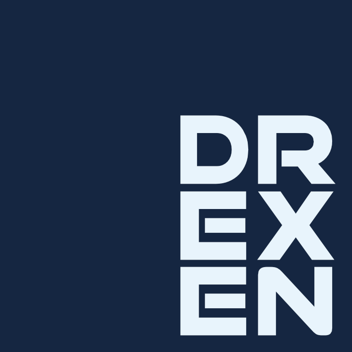
Drexen
Box
El cuadrado hace el trabajo evidente: orden, método, cosas que se entregan completas. Somos cuadrados, dicho en positivo.
Lo que le da personalidad es que el nombre no se acomoda al centro. Se recarga hacia una esquina y deja aire del otro lado. Es una decisión chica que cambia todo: se ve una marca con criterio propio y no una plantilla.
El color termina de definirla. Night, un azul tan profundo que casi es negro, contra lime. El azul pone la base seria. El verde es el que hace que voltees.
Paleta Premium
05 colores
Premium es una de las dos paletas que marcaste como favoritas en el formulario. Aquí está completa, con el papel que juega cada color. La regla de uso es simple: night manda, lime aparece poco y por eso pega.
Con night e ice ya se resuelve el 90% de las piezas. Los otros tres existen para cuando algo necesita subir el volumen o bajar a blanco y negro.
Tipografía
Poppins + Space Mono
Geometría pura: círculos casi perfectos y remates rectos. Rima de forma directa con el cuadrado del logotipo, así que la pieza y el texto hablan el mismo idioma. Es además la tipografía número 1 de tu lista de preferencia.
Para numeración, folios de factura, versiones de archivo y cualquier dato que deba alinearse en columna. Aporta el detalle técnico sin restarle protagonismo al nombre.
Poppins carga todo el peso de la comunicación. Space Mono nunca se usa para párrafos: solo datos, etiquetas y numeración.
Drexen Box · variantes
05 aplicaciones
La combinación principal es night sobre ice. Las demás cubren los escenarios reales de uso: máximo contraste, versión neutra a una tinta, y las dos versiones transparentes para montar sobre fondo oscuro o claro sin recuadro.
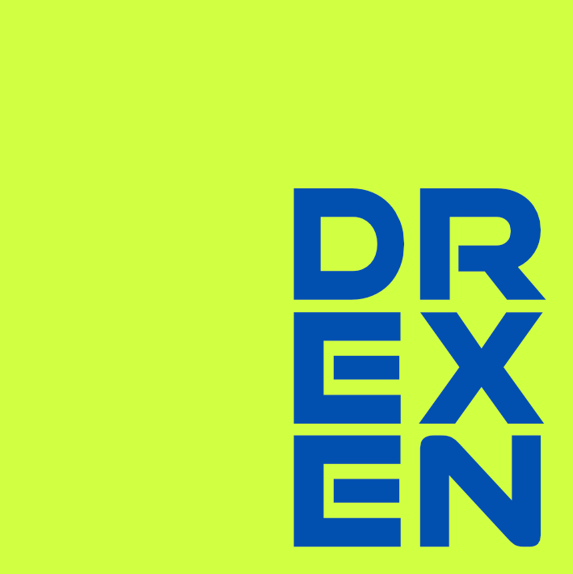
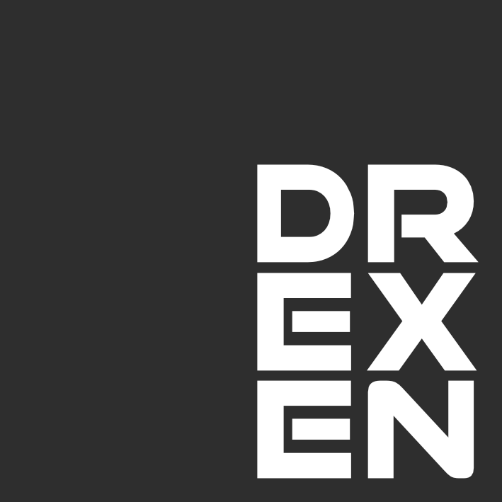
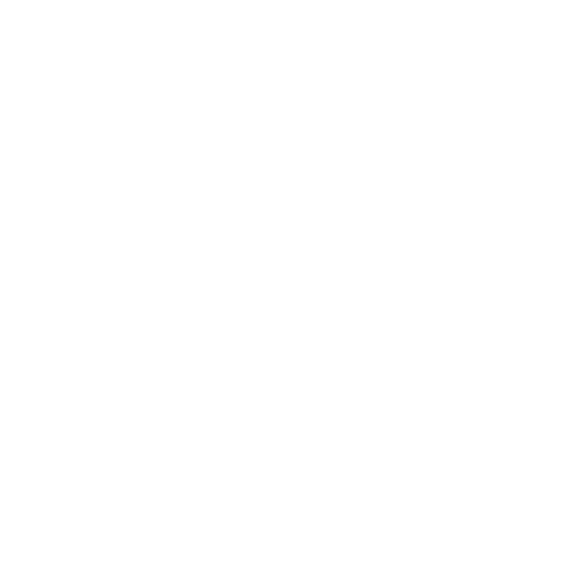
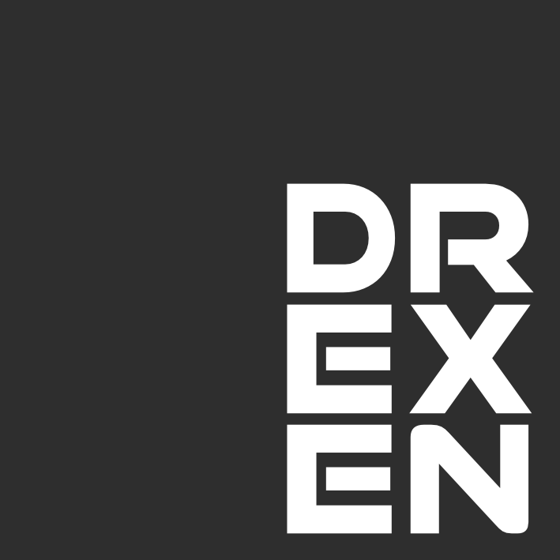
El transparente, montado
Marca de agua
Así se ven las dos versiones transparentes puestas encima de una pieza real, como firma discreta en la esquina. Sin recuadro, sin caja blanca, sin borde. El archivo se monta sobre lo que sea y sigue leyéndose.
que no se ve
en su lugar
Es la prueba de que el archivo transparente funciona montado encima de una imagen y no solo aislado en su placa. Sirve igual en portada de propuesta, en presentación y en la esquina de una factura.
Paleta SaaS Moderno
Drexen Fluid
El nombre está dibujado para leerse de corrido. El trazo no se detiene entre una letra y la siguiente, avanza. Es la misma sensación que deja un software bien hecho: no se ven las costuras entre una parte y otra.
Ahí está lo que hace Drexen resumido en una sola imagen: conectar las piezas que un negocio ya usa y que pasar de una a otra deje de costar trabajo.
El dibujo es futurista sin levantar la voz. Tiene carácter y aun así se mantiene del lado técnico y preciso que marcaste en el formulario.
De las tres, es la que más se lee como producto de software global. Si el objetivo es que nadie adivine desde dónde operas, esta es la ruta.
Paleta SaaS Moderno
05 colores
Esta es la segunda paleta que marcaste como favorita, y la que Fluid comparte con Iconic. Es más fría y más de pantalla que Premium: menos contraste bruto, más aire.
Oceanic sobre blanco es la combinación de todos los días. Mint entra solo cuando hace falta señalar algo, nunca como segundo color de marca.
Tipografía
Syne + Work Sans
Anchos irregulares y uniones raras entre trazos. Es el mismo gesto que ya hace el logotipo, así que el titular se siente parte de la misma pieza y no algo puesto encima.
Neutra, dibujada para pantalla y sin acento regional. Conecta directo con el 79/100 de internacional sin acento que marcaste.
Syne nunca abajo de 20px ni en párrafos: es tipografía de display, no de lectura corrida.
Drexen Fluid · variantes
04 aplicaciones
Oceanic es el color de marca y la versión principal va reversada encima de él. Obsidian resuelve documentos a una tinta, facturas y todo lo que se imprima. Mint funciona como acento en piezas digitales. La versión en blanco cubre cualquier otro fondo oscuro.
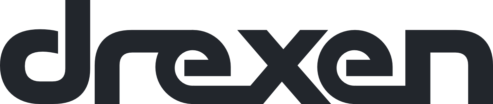
Paleta SaaS Moderno
Drexen Iconic
Esta ruta no es un logotipo, es un sistema. Las letras van sueltas y bien espaciadas, en un dibujo tranquilo que no compite con nada de lo que se le ponga al lado.
La pieza clave es la d inicial. Se mete en un cuadrado de esquinas redondeadas y deja de comportarse como letra: se vuelve icono. El nombre completo se queda a un lado como firma, sin pelear protagonismo.
Aquí es donde esta ruta se paga sola. Drexen va a operar con arquitectura de marca madre y submarcas por vertical, como ya lo definimos. Un producto de salud podría llamarse Drexen Medic. El icono de la d está diseñado para funcionar solo, independiente del nombre completo, como sello que cada submarca del catálogo puede adoptar sin rediseñar nada.
El icono suelto
04 variantes
Este es el elemento que ninguna de las otras dos propuestas trae. Vive sin el wordmark: avatar, favicon, sello en documentos y, sobre todo, marca de cada producto futuro del catálogo.
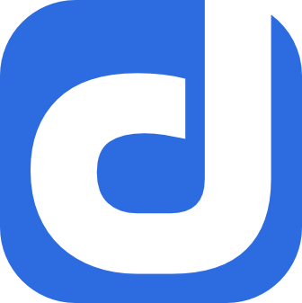
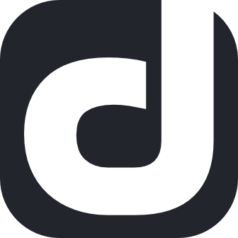
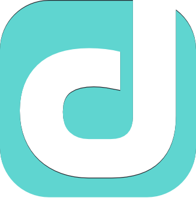
A este tamaño se nota lo importante: la forma aguanta sola, sin el nombre al lado. Eso es lo que permite que mañana haya un catálogo de productos y todos se vean de la misma familia.
Paleta SaaS Moderno
05 colores
La propuesta 03 usa la misma paleta que Fluid, a propósito: son parientes de color. Lo que las separa no es el color, es el icono. Aquí cada tono trabaja en dos planos, el del wordmark y el del sello suelto.
Si más adelante una vertical necesita identidad propia, el movimiento es de color dentro de esta paleta, nunca de forma.
Tipografía y sistema
Work Sans + Space Mono
Las tipografías más neutras y utilitarias del set, porque aquí el protagonista es el icono y no la letra. Work Sans pone el nombre, Space Mono pone la vertical.
Neutra y hecha para pantalla. No agrega personalidad propia, que es justo lo que se necesita cuando el icono ya la puso.
Mayúsculas con letter-spacing amplio. Marca la vertical como una etiqueta de sistema, no como parte del nombre.
Todas las submarcas se ven idénticas menos por una palabra. Eso es un sistema real, no un logo con variantes.
Drexen Iconic · logotipo completo
04 aplicaciones
Estas son las variantes del logotipo completo, icono más wordmark. Es la versión que se usa en encabezados de propuesta, presentaciones y facturas. El icono suelto, que ya viste, viaja aparte.
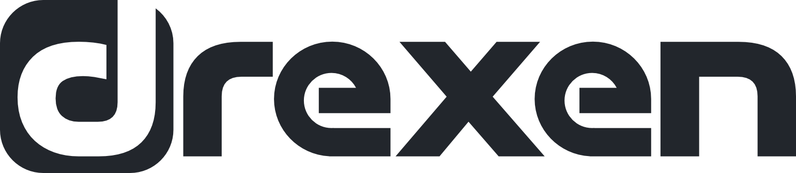
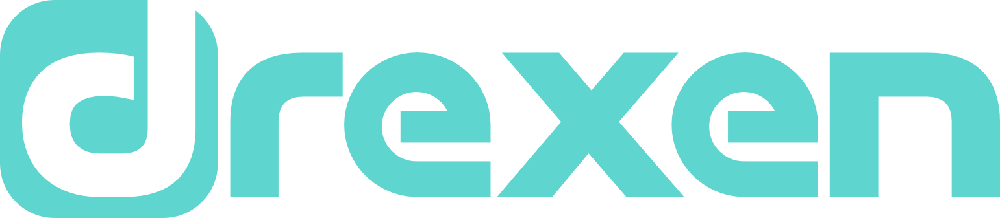
Las tres, lado a lado
Para elegir
|
Propuesta 01Box
|
Propuesta 02Fluid
|
Propuesta 03Iconic
|
|
|---|---|---|---|
| Vista rápida | |||
| Personalidad | Estructura con una decisión fuera de eje, a propósito. Sólida sin ser solemne. | Continuidad y movimiento. Se siente producto terminado, no despacho. | El nombre más un sello propio capaz de viajar solo. |
| Paleta | Premium | SaaS Moderno | SaaS Moderno |
| Composición | Nombre recargado fuera del centro dentro de un cuadrado. | Trazo continuo, en minúsculas, pensado para leerse de corrido. | Minúsculas separadas, con la d convertida en icono independiente. |
| Mejor para | Presencia de marca fuerte y memorable. Se reconoce de lejos y también en tamaño chico. | Aplicaciones digitales y todo lo que deba sentirse como producto SaaS. | Si se planea un catálogo de productos con submarcas por vertical. |
| Lo que aporta de más | El contraste cromático más agresivo de las tres. Es la que menos se confunde con otra. | La lectura más internacional y la más limpia en tamaños reducidos. | Un icono independiente, listo para Drexen Medic y lo que siga. |
Próximos pasos
Dónde va a vivir el logo
Las tres propuestas se diseñaron pensando en los soportes que ya priorizaste. Ninguna depende de una aplicación decorativa para funcionar.
Encabezado, portada y pie de página. Es el primer contacto visual con un prospecto.
Clínicas y demás verticales. Portada, separadores y marca de agua discreta.
Tamaño reducido y una sola tinta. Aquí es donde se prueba de verdad la legibilidad.
La propuesta que elijas se prepara en versión horizontal y versión compacta, con las variantes de color de su paleta y los archivos para fondo claro y fondo oscuro. Listos para montarse en plantillas de propuesta, presentación y factura.
No hay respuesta correcta entre las tres. Hay una que se parece más a como quieres que te vean.
Tómate el tiempo de verlas de nuevo. Cuando tengas clara cuál, la aterrizamos.